class: center, middle # Practical AI with Large Language Models Roman Yurchak --- # Outline ### 1. LLM Landscape ### 2. Building with LLM APIs ### 3. AI-Assisted Development ### 4. Local Models --- class: center, middle # Part 1: LLM Landscape --- # GPT-1 (2018) .left-column60[ **117M parameters** OpenAI's first GPT model **Key innovation**: Pre-training revolution - Train on large corpus (unsupervised) - Then fine-tune for specific tasks **Training data**: BooksCorpus (~7000 books) Outperformed task-specific models on 9/12 benchmarks ] .right-column40[ .center[ <p>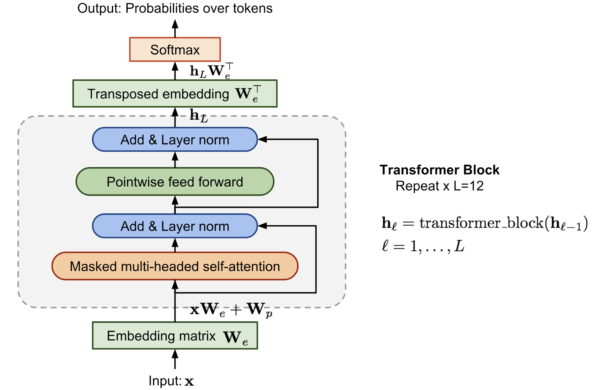</p> ] .small.center[Lilian Weng, 2019] ] --- # GPT-2 (2019) **1.5B parameters** (10× GPT-1) **Still just a language model**: trained with cross-entropy loss on next-token prediction (same as GPT-1) **Key innovations**: - Zero-shot learning demonstrated — no fine-tuning needed for many tasks - Showed that scale alone unlocks new capabilities **"Too dangerous to release"** — Initially withheld, sparked AI safety discussions **Training data**: WebText (40GB of internet text, 8M web pages) --- # GPT-3 & Scaling Laws (2020) **175B parameters** (100× GPT-2) | **Training data**: ~570GB (Common Crawl, WebText, Books, Wikipedia) **Key innovations**: In-context learning / few-shot prompting, no gradient updates at inference **Scaling laws** discovered: Performance scales predictably with compute, data, and parameters .center[ <img src="images/scaling_laws.png" style="width: 90%;" /> ] .small.center[Kaplan et al. 2020] --- # Chinchilla Scaling Laws (2022) DeepMind's **Chinchilla paper** — **Key insight**: Models were under-trained! - Previous models: too many params, too few tokens → Optimal ratio: **~20 tokens per parameter** - **Results**: 70B Chinchilla beats 280B Gopher (same compute budget, better allocation) .center[ <p>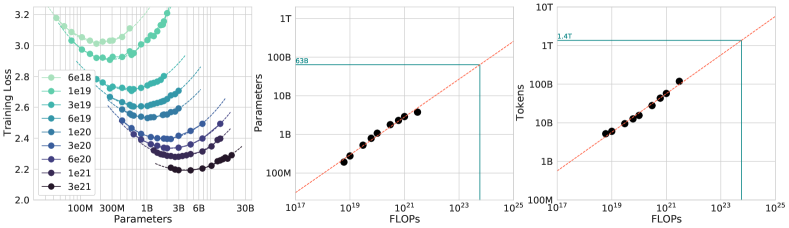</p> ] .small.center[Hoffmann et al. 2022] --- # ChatGPT & RLHF (2022) **InstructGPT** (Jan 2022) → **ChatGPT** (Nov 2022) — Made LLMs accessible to everyone → 100M users in 2 months **RLHF**: Reinforcement Learning from Human Feedback .center[ <img src="images/rlhf_pipeline.png" style="width: 85%;" /> ] .small.center[Ouyang et al. 2022 (InstructGPT)] --- # GPT-4, Claude & Multimodal (2023-2024) **GPT-4** (Mar 2023): Multimodal (vision + text), significantly improved reasoning **Claude** (Anthropic): Constitutional AI approach, long context (100K+ tokens) **Open source revolution**: - Llama 2/3 (Meta) - Mistral, Mixtral - Gemma (Google) - Qwen (Alibaba), DeepSeek --- # LLM Progress: Benchmarks .center[ <p>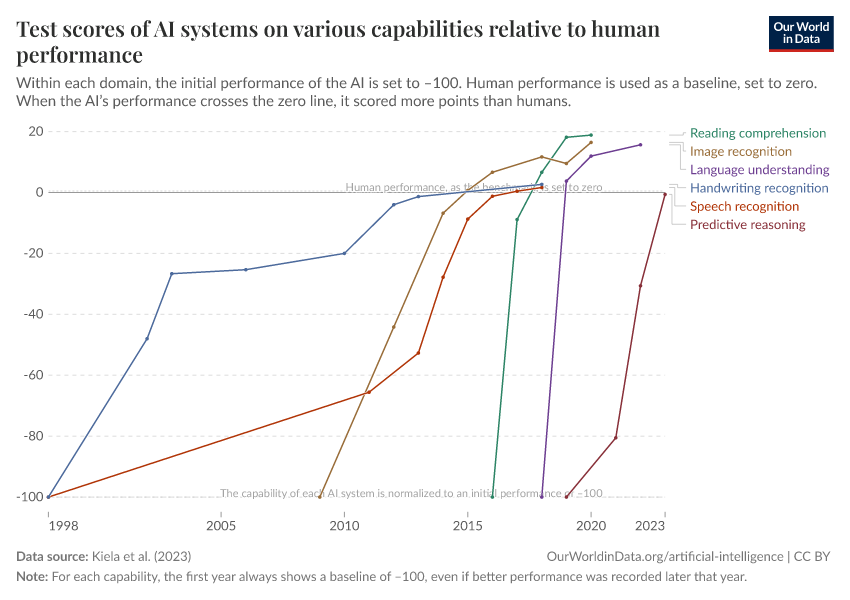</p> ] .small.center[AI capabilities vs human performance. Source: Our World in Data] --- # Chain of Thought (2022+) .left-column[ **"Let's think step by step"** **Key insight**: Prompting models to show reasoning dramatically improves performance **Emergent ability at scale** (2022): - Only effective with large models (100B+) - Smaller models can benefit via fine-tuning **Impact**: +39 pp on GSM8K math benchmark (18% → 57%) ] .right-column[ .center[ <img src="images/chain_of_thought.png" style="width: 100%;" /> ] .small.center[Wei et al. 2022] ] --- # Mixture of Experts (MoE) **Sparse activation**: Only a subset of parameters used per token **How it works**: Multiple "expert" sub-networks, router selects 1-2 experts per token → More total params, same compute cost **Examples**: Mixtral 8×7B (uses 2 of 8 experts), GPT-4 (rumored MoE), DeepSeek .center[ <img src="images/moe_architecture.png" style="width: 60%;" /> ] .small.center[Switch Transformer] --- # When to Use ML vs DL vs LLM APIs **Classical ML** (sklearn, XGBoost): - Structured/tabular data, interpretability needed, small datasets **Deep Learning** (PyTorch, custom models): - Images, audio, video, specific domains requiring custom architectures **LLM APIs**: - NLP tasks, limited labeled data, rapid prototyping - Complex reasoning, code generation, multi-step tasks - When you need general knowledge or common sense --- # Inference Costs Are Dropping Fast .center[ <p>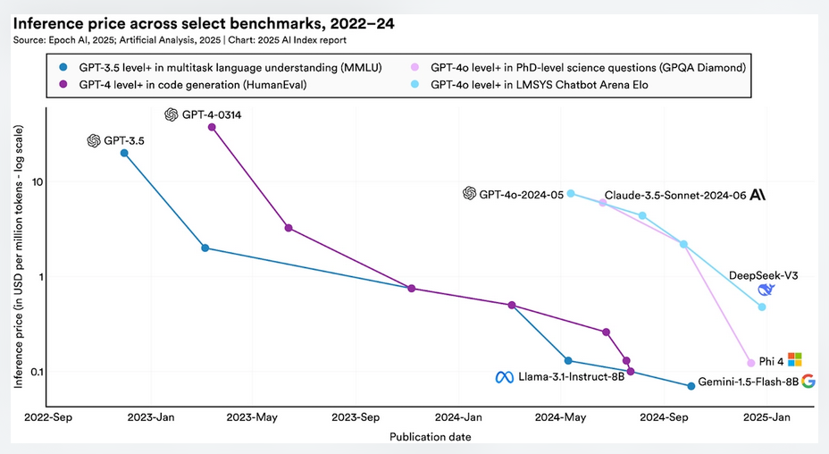</p> ] .small.center[AI Index Report 2025 — ~280× cheaper in 2 years] --- # Training Compute Growth .center[ <p>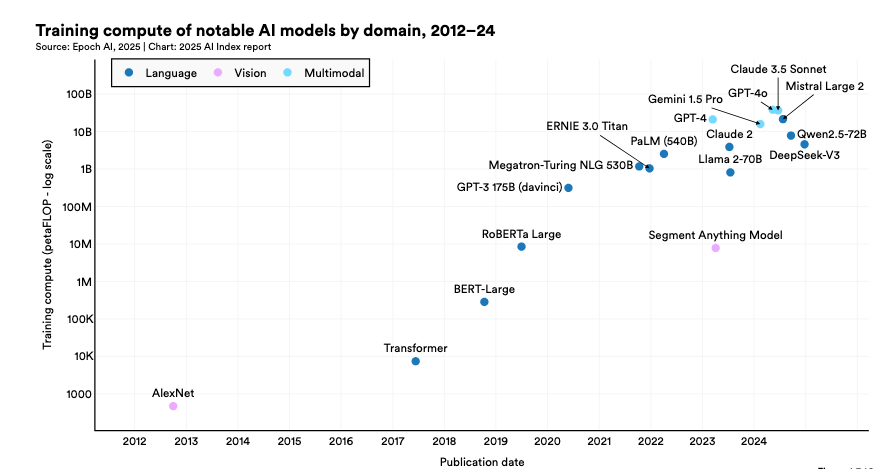</p> ] .small.center[AI Index Report 2025 — GPT-4o required 38 billion petaFLOP to train] --- # Model Intelligence vs Price/Size (Feb 2026) .center[ <p>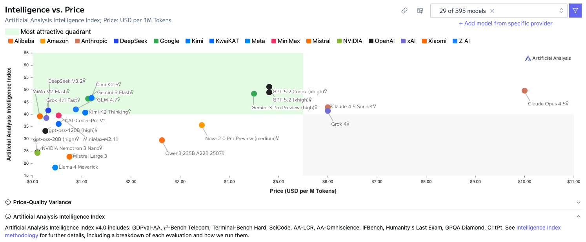</p> ] --- # LLM Arena Human preference ranking: users vote on blind A/B comparisons → ELO scores .center[ <p>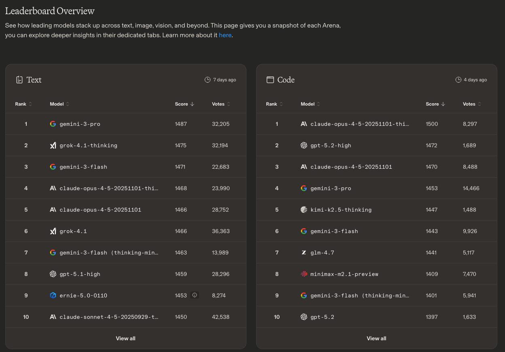</p> ] --- class: center, middle # Part 2: Building with LLM APIs --- # LLM API Basics Most providers standardize around **OpenAI API format** **Essential parameters:** - `model` — which model to use - `messages` — the conversation history - `max_tokens` — limit response length .center[ <p>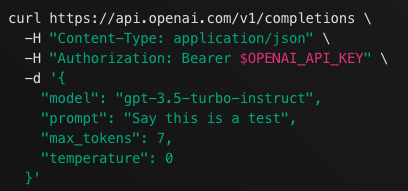</p> ] --- # Temperature & Sampling **temperature** controls randomness in token selection: | Value | Behavior | Use case | |-------|----------|----------| | 0 | Deterministic | Facts, code | | 0.7 | Balanced | General use | | 1.5+ | Creative | Brainstorming | **top_p** (nucleus sampling): Only consider tokens comprising top X% probability mass - `top_p=0.1` → only tokens in top 10% probability are considered → Use temperature OR top_p, not both --- # System Prompts **System prompt**: Instructions that define the model's behavior ```python messages = [ {"role": "system", "content": "You are a helpful assistant that responds in JSON format."}, {"role": "user", "content": "List 3 French cities"} ] ``` **Few-shot examples**: Include input/output pairs in the prompt **Chain-of-thought**: "Let's think step by step..." --- # Context Size Management Token limits have grown: 4K → 128K → 1M+ But **attention dilution** is real: models lose precision with long contexts .center[ <p>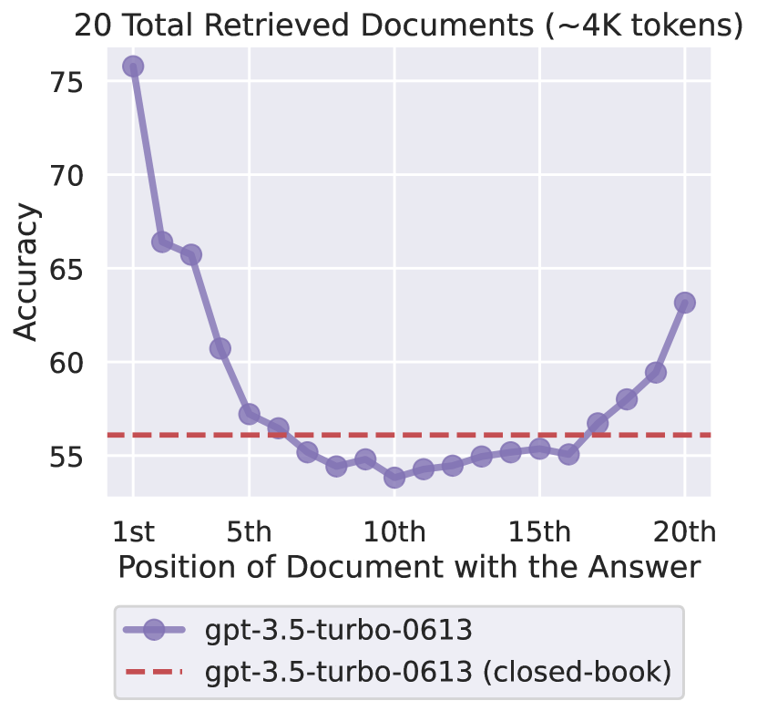</p> ] .small.center[Liu et al. 2023 — "Lost in the Middle"] --- # Structured Output Force model to output valid JSON matching a schema: ```python response = client.chat.completions.create( model="gpt-4o", response_format={"type": "json_schema", "json_schema": {...}}, messages=[...] ) ``` Works with **Pydantic** (Python) or **Zod** (TypeScript) for validation Open-source frameworks (vLLM, Outlines) also support **regexp constraints** --- # Constrained Decoding **How structured output works internally:** At each token, mask logits to only allow valid continuations .center[ <p>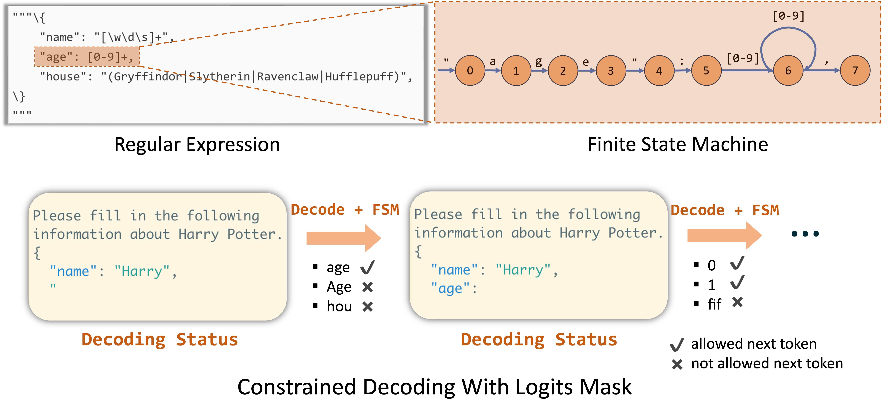</p> ] .small.center[FSM-guided decoding ensures valid JSON output] --- # Tool Calling / Function Calling Model can request to call external functions you define: ```python tools = [{ "type": "function", "function": { "name": "get_weather", "description": "Get current weather for a location", "parameters": { "type": "object", "properties": { "location": {"type": "string"} } } } }] ``` Flow: User → Model → Tool call request → You execute → Result back to model --- # Practical API Tips **Streaming**: Use `stream=True` for better UX (tokens arrive as generated) **Error handling**: - Rate limits → exponential backoff - Timeouts → set reasonable limits, handle gracefully **Cost optimization**: - Token caching (providers cache prompt prefixes) - Batching requests when possible - Monitor usage, set budget alerts --- class: center, middle # Retrieval Augmented Generation (RAG) --- # Modern Text Embeddings Text → Dense vector (768-4096 dimensions) ```python from sentence_transformers import SentenceTransformer model = SentenceTransformer('all-MiniLM-L6-v2') embeddings = model.encode(["Hello world", "Bonjour"]) ``` **Open source**: `sentence_transformers`, BGE, E5, GTE **APIs**: OpenAI (`text-embedding-3`), Cohere, Voyage **Quantization**: default float32, but int8 or binary works well — higher dims + lower precision often beats lower dims + full precision --- # Embedding Benchmarks (MTEB) .center[ <p>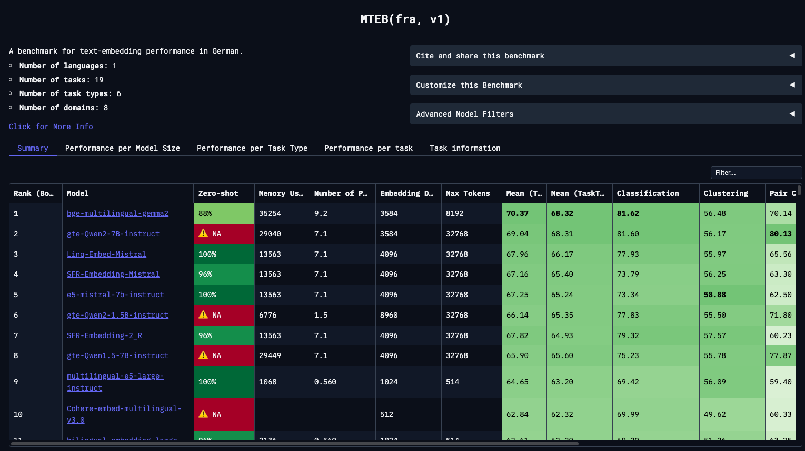</p> ] .small.center[MTEB French benchmark — Choose based on language/domain] --- # Approximate Nearest Neighbor (ANN) Exact search is O(n) — doesn't scale to millions of vectors **HNSW**: most popular algorithm (used in pgvector, Pinecone, Qdrant, etc.) .center[ <p>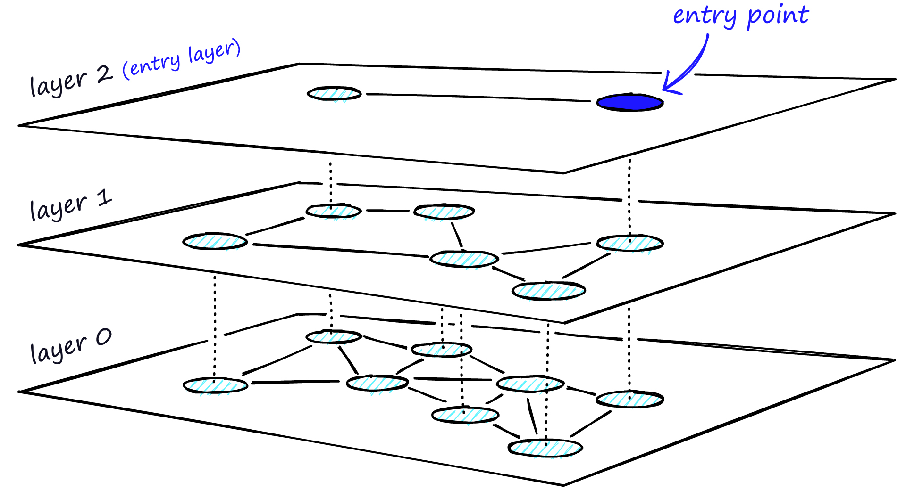</p> ] .small.center[Navigates from top layer (few nodes) to bottom (all nodes)] --- # RAG Architecture .center[ <p>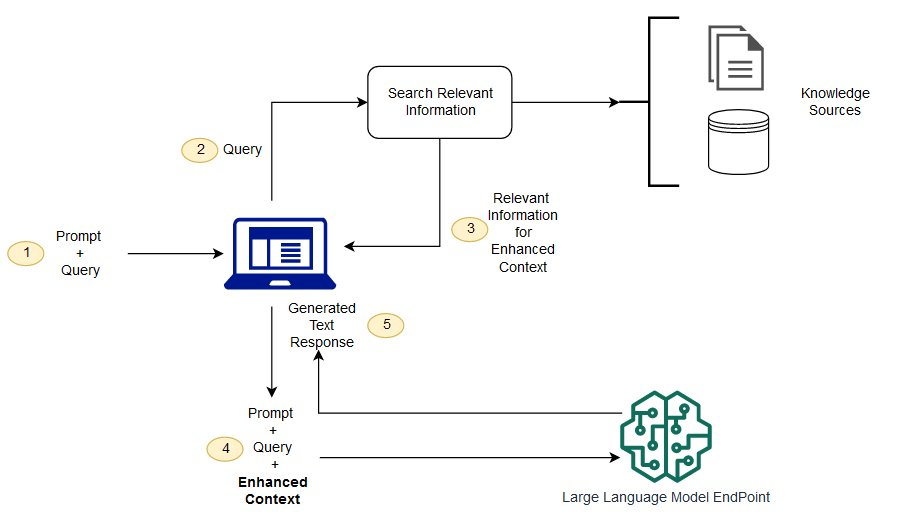</p> ] .small.center[AWS — Query → Search → Retrieve context → Generate with LLM] --- # Chunking & Advanced RAG **Chunking**: Fixed size + overlap (e.g., 512 tokens, 50 overlap) - Too small → loses context; too big → retrieves noise **Hybrid search**: Dense vectors + sparse (BM25/keywords) **Reranking**: Cross-encoder to re-score top-k results Start simple, add complexity only if retrieval quality is poor **Evaluation is hard**: Most failures are retrieval failures --- # RAG vs Agentic Search Recent trend: **tool-based search often beats RAG** .center[ <p>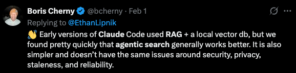</p> ] Give LLM search tools (grep, web search) → let it search iteratively --- # Introduction to AI Agents .center[ <p>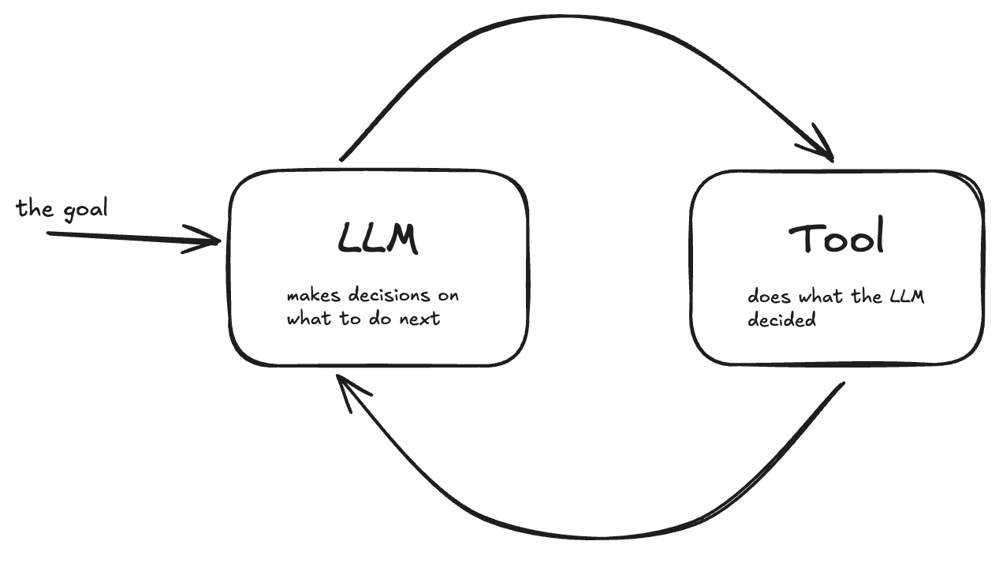</p> ] .small.center[The agent loop (Temporal blog)] **ReAct**: Reason → Act → Observe → Repeat **Challenges**: Reliability (error propagation), cost (many API calls), debugging --- class: center, middle # Part 3: AI-Assisted Development --- # AI Coding Assistants .cols[ .col50[ **IDE assistants**: Copilot, Cursor, Windsurf **Terminal agents**: Claude Code, Aider, Codex CLI Terminal-based agents recently gained popularity ] .col50[ <p>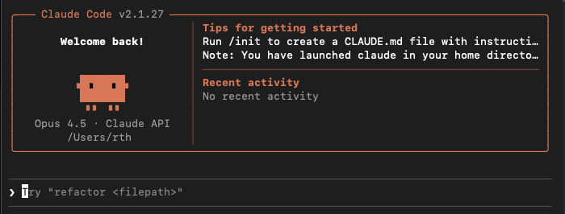</p> ] ] Natural language → code changes, file edits, git operations --- # "Vibe Coding" Describe what you want, never look at the code **Works well for**: prototyping, exploration, learning **Less suitable for**: complex systems, security-critical code, production .center[ <p>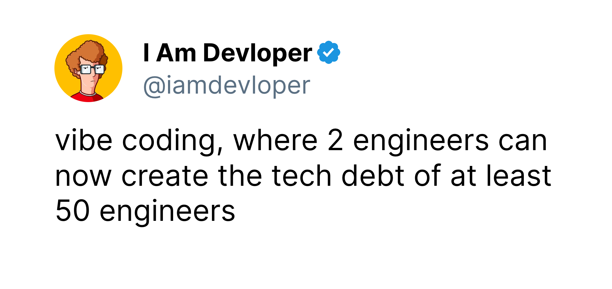</p> ] --- # Production Code: Quality Still Matters AI generates code fast, but **you're still responsible** **Risks of skipping review:** - Codebase becomes messy → each successive change becomes harder - You lose understanding of your own code - Hallucinated APIs, subtle bugs, security vulnerabilities **Tea App breach (2025)**: Firebase left with default settings → 72K images + 13K government IDs exposed --- # Enforcing Quality: Linting, Unit Tests and CI - **Git** for version control and collaboration - **Linting + formatting** (`ruff`) — run at each commit with `pre-commit` - **Type annotations + type checking** (`mypy`) - **Unit tests** (`pytest`) — check code coverage - **Continuous Integration (CI)** to run linters + tests on every push --- # Code Review - Detect issues: security, performance, bugs - Share code knowledge in the team — good time to ask questions - Done through **Pull Requests** (GitHub/GitLab) .center[ <p>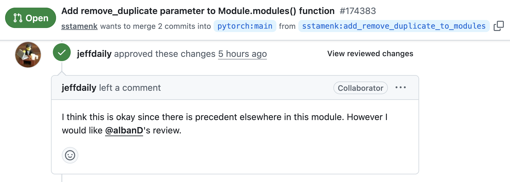</p> <p>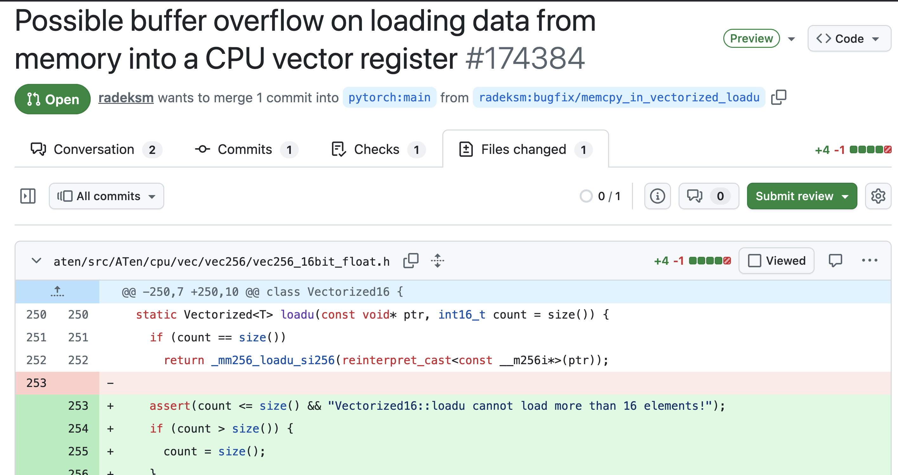</p> ] --- # Context Management & Good Practices **Smaller, focused changes** — easier for agents and humans to understand Clear file organization and naming — code in a Python package, not one large notebook Some documentation (README, docstrings) Good development practices translate well to agent-assisted coding --- # How Development is Changing The trend: less time **writing** code manually More time on: - **Architecture** and system design - **Code review** - **Understanding the business problem** that needs solving --- class: center, middle # Part 4: Local Models --- # Why Run Models Locally? - **Privacy**: Data never leaves your machine - **Cost**: No per-token fees at scale - **Latency**: No network round-trip - **Offline**: Works without internet .center[ <p>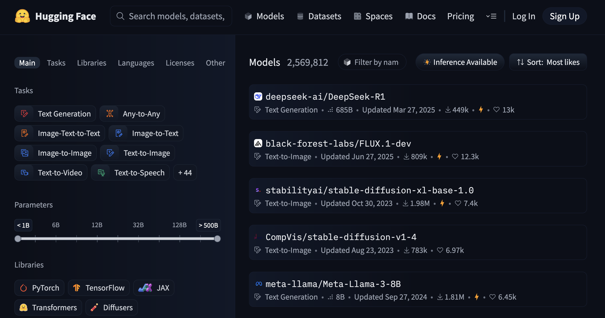</p> ] --- # ONNX: Portable Model Format .center[ ] **ONNX** (Open Neural Network Exchange): run models anywhere - Export from PyTorch, TensorFlow, scikit-learn - **ONNX Runtime**: optimized inference engine - Hardware acceleration (CPU, CUDA, TensorRT) --- # Can You Run It Locally? **Model must fit in memory** (VRAM for GPU, RAM for CPU) .center[ <!-- Source: https://www.hyperstack.cloud/technical-resources/tutorials/how-to-choose-the-right-gpu-for-llm-a-practical-guide --> <p>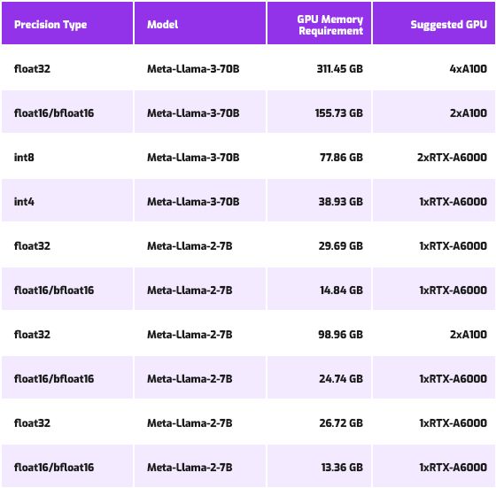</p> ] Rule of thumb: ~2GB per 1B params (fp16). Workarounds: layer offloading, multi-GPU --- # Quantization: Making Models Fit | Precision | Bytes/param | 7B model | 70B model | Quality loss | |-----------|-------------|----------|-----------|--------------| | FP16 | 2 | 14 GB | 140 GB | baseline | | Q8 (INT8) | 1 | 7 GB | 70 GB | negligible | | Q4 (INT4) | 0.5 | 3.5 GB | 35 GB | minor (~1-3%) | | Q2 | 0.25 | 1.75 GB | 17.5 GB | noticeable | - **Q4** is the sweet spot: big memory savings, minimal quality loss - **Formats**: GGUF (llama.cpp), GPTQ, AWQ --- # Inference Frameworks - **llama.cpp**: CPU-friendly, GGUF format, very portable - **Ollama**: Easy setup (`ollama run llama3`) - **vLLM**: High-throughput serving, PagedAttention - **MLX**: Apple Silicon optimized Built-in optimizations: KV cache, continuous batching, flash attention --- # What Runs Where? | Hardware | RAM/VRAM | Can run | Speed | |----------|----------|---------|-------| | Laptop CPU | 16 GB | 7B Q4 | ~10 tok/s | | RTX 4080 | 16 GB | 7B fp16, 13B Q4 | ~50 tok/s | | RTX 4090 | 24 GB | 13B fp16, 20B Q4 | ~80 tok/s | | M2/M3 Mac | 32 GB | 13B fp16, 30B Q4 | ~30 tok/s | | A100 | 80 GB | 70B Q4 | ~30 tok/s | Human reading: ~4 tok/s — Start with Ollama + quantized model --- class: middle, center # Lab: back here in 15 min!